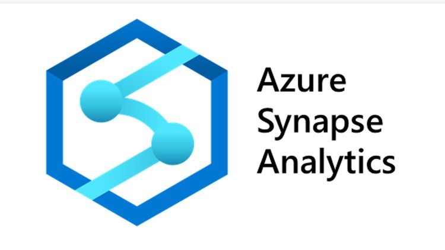
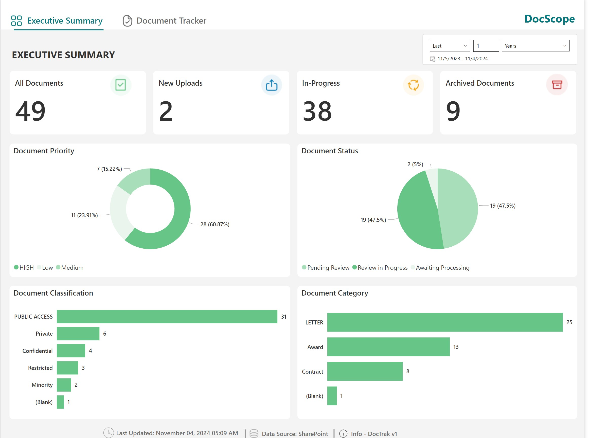
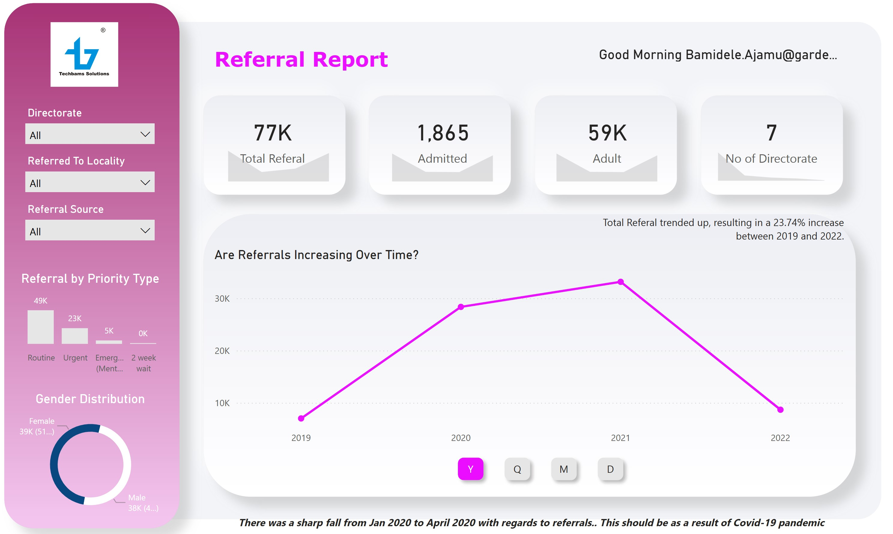
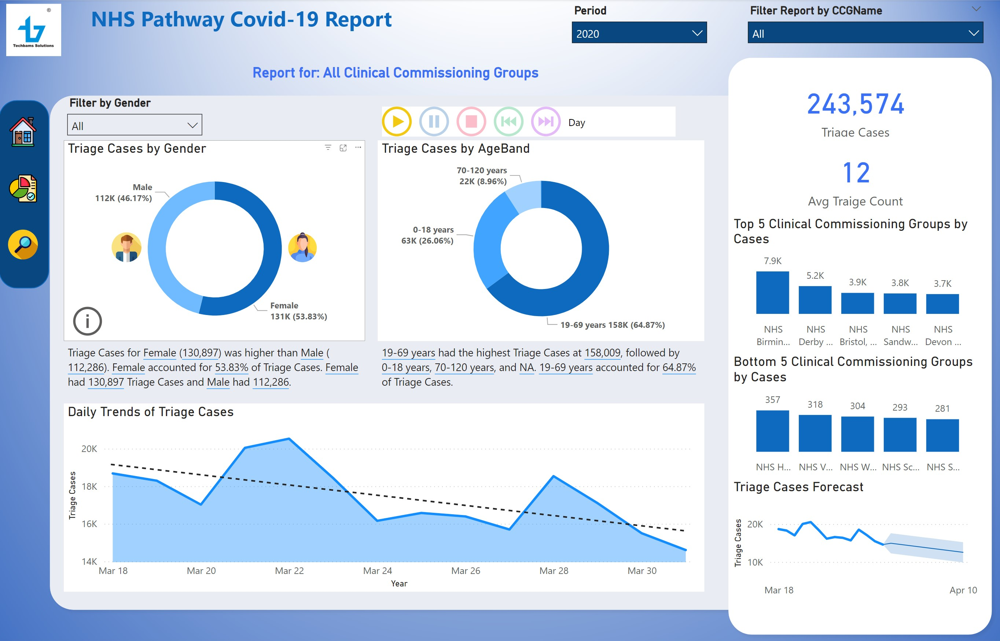
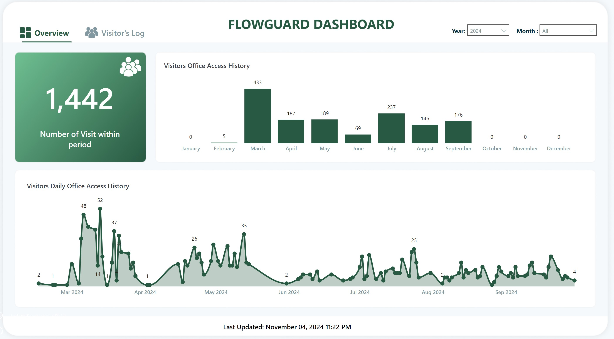
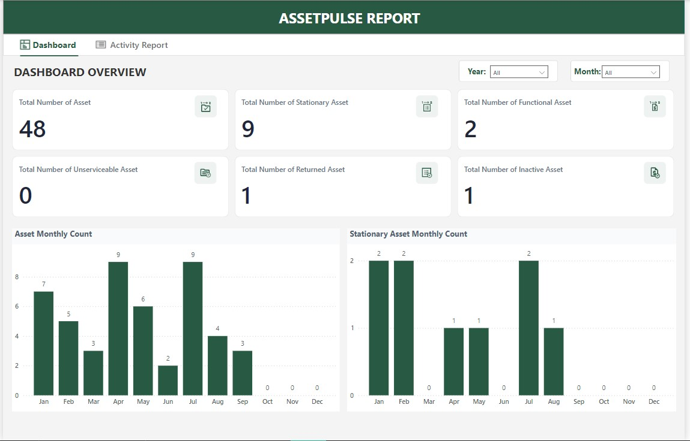

This project demonstrates how to leverage Azure Synapse Analytics with PySpark SQL and Synapse Notebooks for efficient
data processing, transformation, and analysis. It showcases how Synapse can handle large-scale datasets and integrate
seamlessly with other Azure services..

This tracks and manage documents collection, review and approval of a company's workflow. It also tracks the currenct state of the document.
This Document Management Dashboard was developed to provide a high-level summary of document statuses, priorities,
classifications, and categories for streamlined tracking and management within an organization.
Hence, it aids in tracking document flow, assessing
workload, and maintaining document organization, making it an essential tool for document management teams.

The referral report is designed to provide a comprehensive overview of referrals processed by a health company.
"Referral" here refers to the process of directing individuals (likely patients or clients) from one service or
organization to another, potentially to address specialized needs or for more intensive care. This report focuses on
summarizing the volume, types, and trends in referrals over a specified period, allowing stakeholders to understand the
demand and distribution of services within the organization.

This interactive Pharmacy Report Dashboard was designed for the NHS Business Services Authority to provide comprehensive
insights into pharmacy availability and trends across different regions based on a sample data shared with me.
This dashboard serves as a strategic tool for NHS administrators to monitor pharmacy distribution, analyze shifts in
service availability, and make data-driven decisions to support public healthcare access.
This COVID-19 Realtime Dashboard provides a comprehensive overview of COVID-19 statistics in Nigeria, presenting
critical data for monitoring the pandemic. Designed for health organizations and decision-makers, the dashboard offers a
variety of visual insights. This dashboard is a valuable tool for public health tracking and policy planning, enabling users to monitor COVID-19
cases in real time and make data-driven decisions.

This NHS Pathway COVID-19 Report is a comprehensive data visualization dashboard designed to monitor COVID-19 triage
cases across various demographics and clinical commissioning groups (CCGs) in the UK. This dashboard provides detailed
insights to healthcare providers for better understanding and management of COVID-19 response efforts.
This report serves as an essential tool for NHS teams to analyze COVID-19 triage patterns and make data-informed
decisions on public health strategies.

This FlowGuard Dashboard provides a comprehensive overview of visitor access patterns within a company. Designed to track
and analyze the flow of people entering and exiting the premises, this dashboard leverages visual insights to support
security, compliance, and operational decision-making.
This intuitive tool provides actionable data, supporting facilities management teams in optimizing office security and
access control strategies.

The AssetPulse Report is a comprehensive dashboard designed to streamline asset and stationery management within an
organization. This tool tracks asset requests from initiation to final approval, providing a clear, step-by-step view of
the workflow. Users can monitor the status of each request, view pending approvals, and manage inventory levels
effectively, all in one place. By offering transparency in the request and approval processes, AssetPulse helps optimize
resource allocation and improve operational efficiency.

The Retail Price Inflation by MSA (Metropolitan Statistical Area) dashboard is a single chart that provides a detailed analysis of inflation
trends across various metropolitan areas. It tracks price changes in retail goods over time, helping users
understand how inflation impacts specific regions. With visual insights into pricing trends and regional comparisons,
the dashboard enables businesses, policymakers, and analysts to make data-driven decisions. By highlighting inflationary
patterns by MSA, this dashboard serves as a valuable resource for managing costs, planning strategic pricing, and
assessing economic health across metropolitan regions.